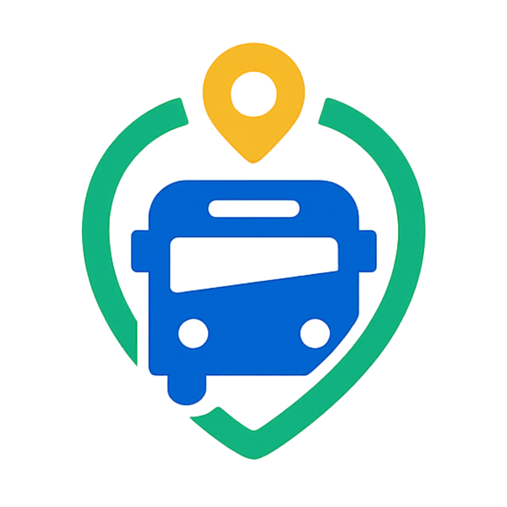

Role-based experiences
Dedicated Parent, Driver, and Admin flows after sign-in.

Live school bus visibility for families, drivers, and administrators. Built with Flutter and Firebase for real-time fleet updates and safer daily transport coordination.
SchoolWay connects everyone involved in the school run through a single system. Parents can follow bus movement and updates, drivers can manage trips and check-ins, and admins can operate routes, users, and alerts with shared data.
Dedicated Parent, Driver, and Admin flows after sign-in.
Live trip visibility and map interactions with configurable tile sources.
CSV imports, route planning, notifications, and reporting for school staff.
Driver-side NFC workflows for fast, reliable student boarding records.
flutter_map and latlong2flutter pub get.flutter run.